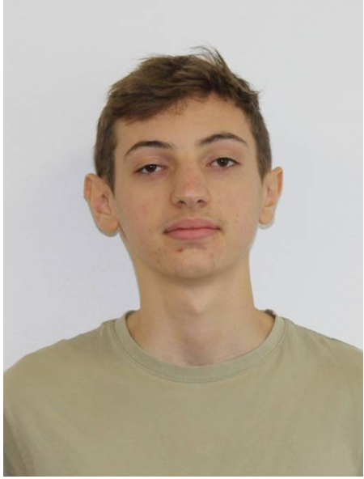
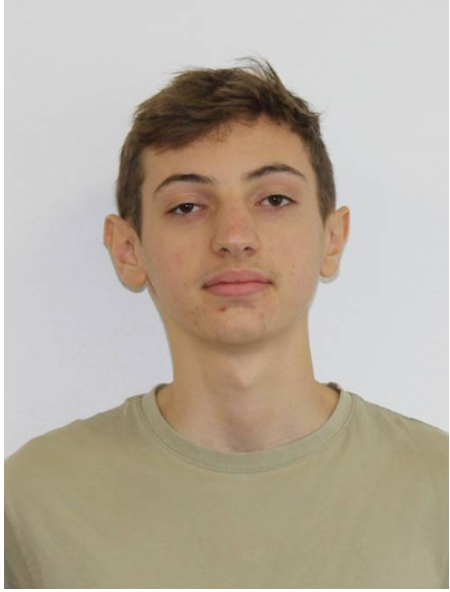
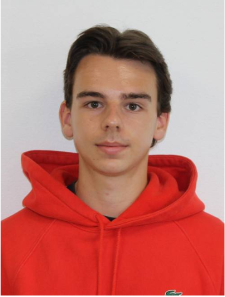
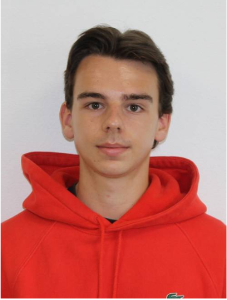
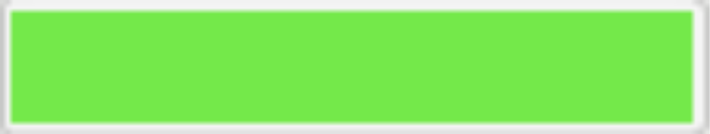
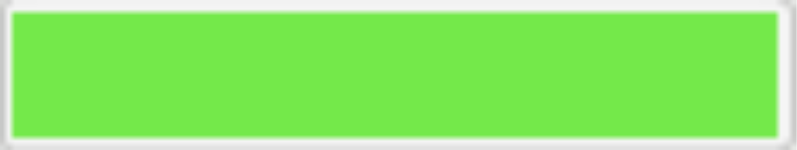

À propos
Le principe d’Undead Rift est simple, il s‘agit d’un jeu de tir en solo ou en multijoueur où l’on doit tuer des zombies afin de survivre le plus longtemps possible et de récupérer assez de points pour débloquer de nouvelles armes et cartes à jouer.

 

 

 
